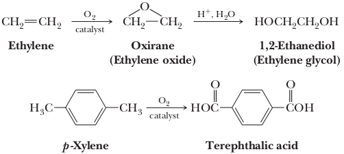

Fischer esterification
Recall that, in the early 1930s, Carothers and his associates had concluded that polyester fibers from aliphatic dicarboxylic acids and ethylene glycol were not suitable for textile use because their melting points are too low. Winfi eld and Dickson at the Calico Printers Association in England further investigated polyesters in the 1940s and reasoned that a greater resistance to rotation in the polymer backbone would stiffen the polymer, raise its melting point, and thereby lead to a more acceptable polyester fiber. To create stiffness in the polymer chain, they used 1,4-benzenedicarboxylic acid (terephthalic acid). Polymerization of this aromatic dicarboxylic acid with ethylene glycol gives poly(ethylene terephthalate), abbreviated PET (also PETE).

The crude polyester can be melted, extruded, and then cold-drawn to form the textile fiber Dacron polyester, outstanding features of which are its stiffness (about four times that of nylon 66), very high strength, and remarkable resistance to creasing and wrinkling. Because the early Dacron polyester fibers were harsh to the touch owing to their stiffness, they were usually blended with cotton or wool to make acceptable textile fibers. Newly developed fabrication techniques now produce less harsh Dacron polyester textile fibers. PET is also fabricated into Mylar films and recyclable plastic beverage containers. Ethylene glycol for the synthesis of PET is obtained by air oxidation of ethylene to ethylene oxide followed by hydrolysis to the glycol. Ethylene is, in turn, derived entirely from cracking either petroleum or ethane derived from natural gas. Terephthalic acid is obtained by oxidation of p-xylene, an aromatic hydrocarbon obtained along with benzene and toluene from catalytic cracking and reforming of naphtha and other petroleum fractions.
